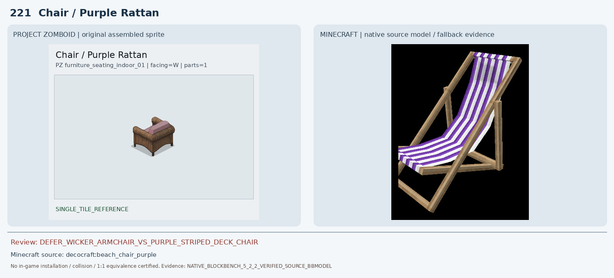
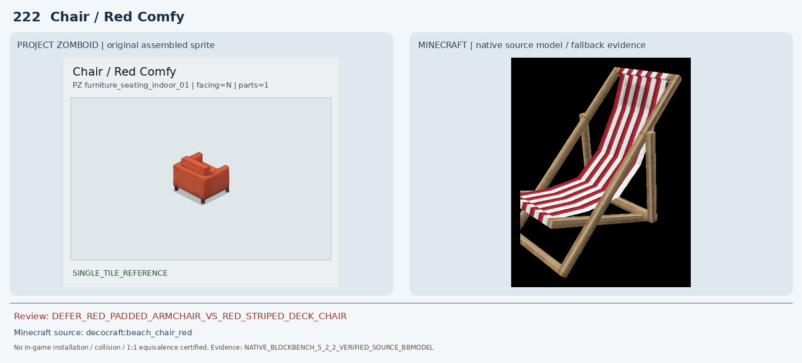
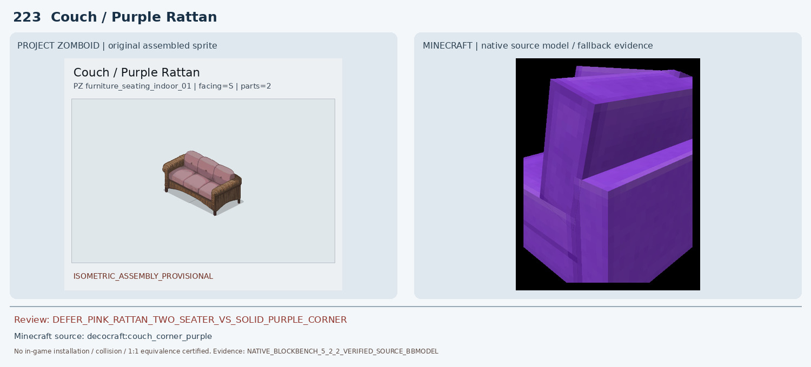
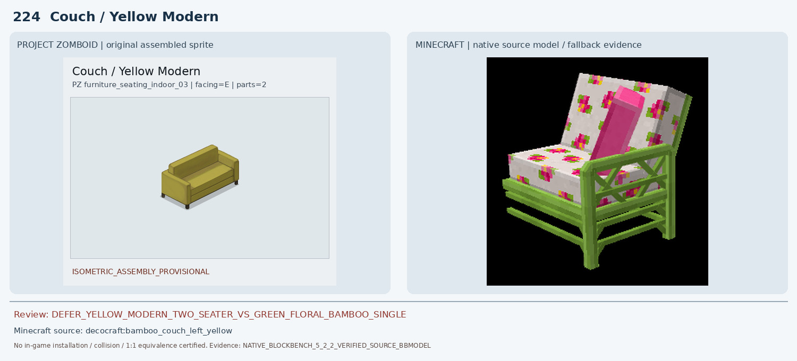
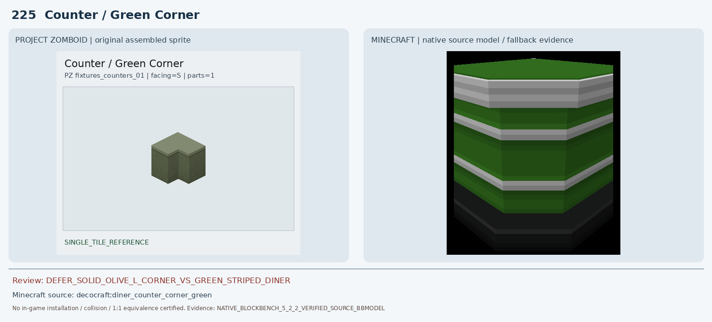
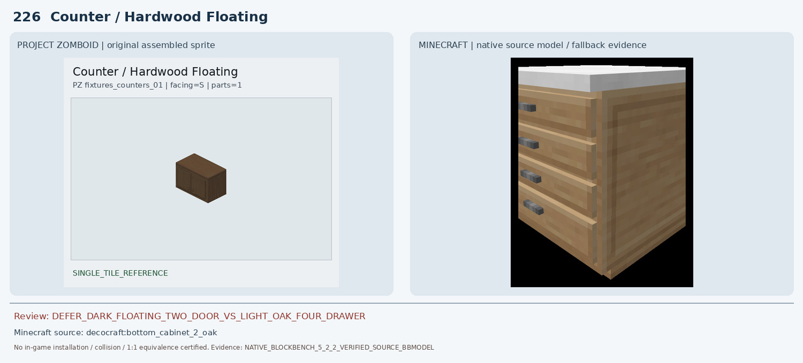
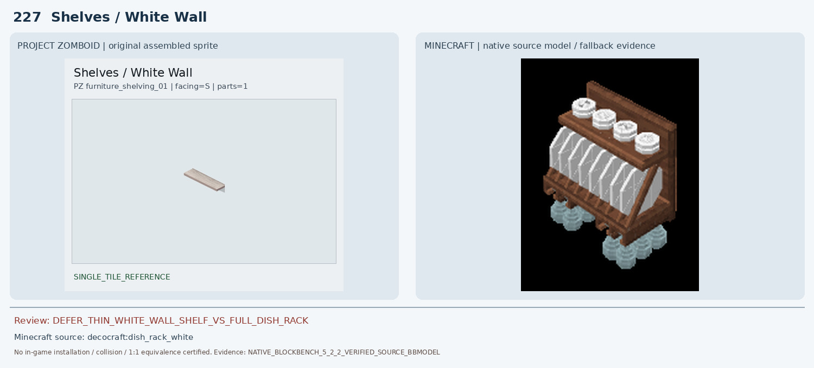
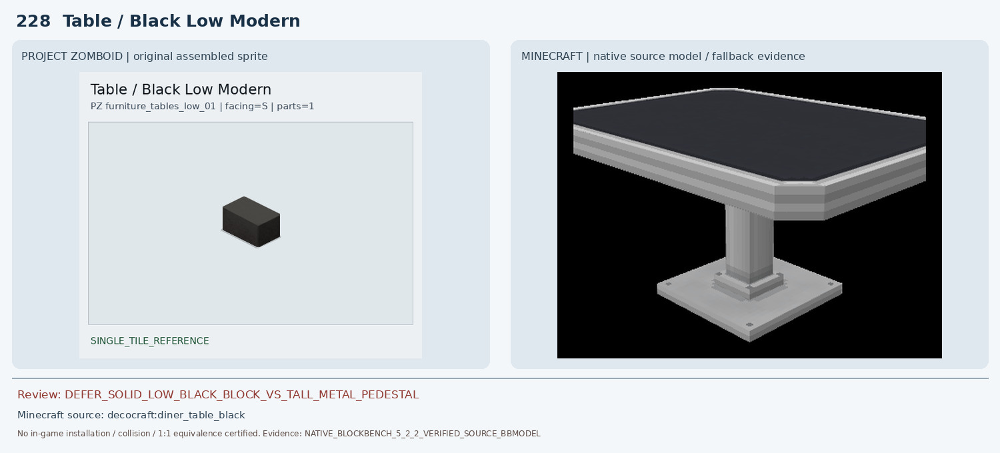
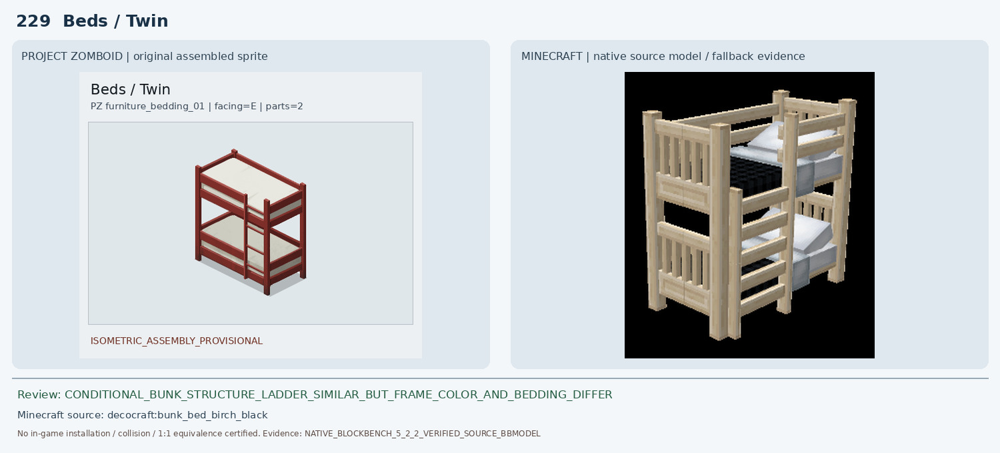
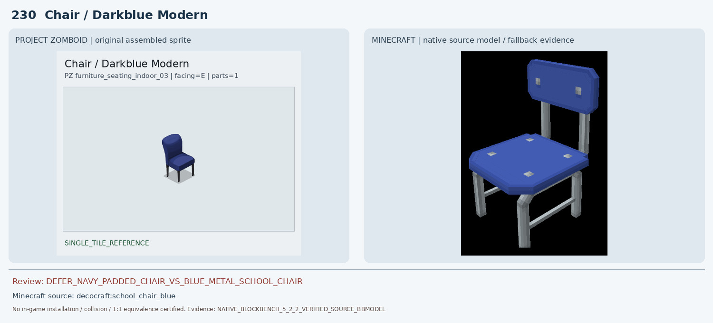

로즈우드 221~230 개별 검수
조건부 1 · 보류 9 · 인게임 최종 인증 0
221 Chair / Purple Rattan
DEFER_WICKER_ARMCHAIR_VS_PURPLE_STRIPED_DECK_CHAIR | DEFER

PZ는 낮고 둥근 갈색 라탄 팔걸이·분홍 쿠션의 실내 암체어다. 기존 pfm:oak_chair_classic_purple Blockbench 캡처는 기둥 2개와 청록 가로대만 있는 불완전 모델이었다. 새로 Decocraft beach_chair_purple 원본 BBMODEL 18 cubes를 공식 Blockbench 5.2.2에서 렌더하니 보라·흰색 줄무늬 천이 늘어진 긴 야외 접이식 덱체어, 가느다란 밝은 목재 경사 프레임으로 확인됐다. 등나무 양팔걸이·두꺼운 분홍 쿠션·낮은 사각 몸체가 없어 보류.
222 Chair / Red Comfy
DEFER_RED_PADDED_ARMCHAIR_VS_RED_STRIPED_DECK_CHAIR | DEFER

PZ는 두꺼운 적색 통쿠션과 양팔걸이, 낮은 네 발이 있는 실내 암체어다. 기존 pfm:oak_chair_classic_red는 불완전 기둥 2개/가로대만 보였다. 새 Decocraft beach_chair_red 원본 BBMODEL 18 cubes를 Blockbench 5.2.2에서 렌더하니 빨강·흰색 줄무늬 천과 가는 나무 경사 프레임을 가진 접이식 야외 덱체어였다. 패딩·양팔걸이·사각 실내 암체어 구조가 모두 다르다.
223 Couch / Purple Rattan
DEFER_PINK_RATTAN_TWO_SEATER_VS_SOLID_PURPLE_CORNER | DEFER

PZ는 2×1 갈색 라탄 양팔걸이와 연분홍 좌석 2개/등받이를 가진 완성형 소파다. 기존 Macaw purple_couch 실제 Blockbench는 보라색 한쪽 조각으로 라탄·분홍 쿠션이 없다. 새 Decocraft couch_corner_purple BBMODEL 7 cubes를 Blockbench 5.2.2로 렌더하니 선명한 보라색의 두꺼운 코너/한 좌석 모듈일 뿐 라탄 골조와 연분홍 패브릭이 없고 2×1 완제품 결합도 미검증. 보류.
224 Couch / Yellow Modern
DEFER_YELLOW_MODERN_TWO_SEATER_VS_GREEN_FLORAL_BAMBOO_SINGLE | DEFER

PZ는 단색 황토 노란 1×2 현대식 직선 2인 소파다. 기존 Macaw yellow_couch 렌더는 단일 좌석/팔걸이 조각으로 2인 결합 미검증. 새 Decocraft bamboo_couch_left_yellow 원본 BBMODEL 34 cubes를 Blockbench 5.2.2로 렌더하니 녹색 대나무 개방형 프레임에 흰색·분홍 꽃무늬 쿠션과 분홍 등받이가 있는 단일 좌석 모듈이었다. PZ의 단색 노랑 두꺼운 프레임·낮은 직선 등받이와 색·재질·폭·형태가 다르다.
225 Counter / Green Corner
DEFER_SOLID_OLIVE_L_CORNER_VS_GREEN_STRIPED_DINER | DEFER

PZ는 무광 올리브 단색 목재의 안쪽 직각 홈이 있는 L자 코너 카운터다. Decocraft diner_counter_corner_green 실제 BBMODEL 11 cubes를 Blockbench 5.2.2에서 재검증한 결과 채도 높은 녹색/흰색·은색의 수평 줄무늬와 검은 하부, 각진 다이너형 전면이었다. PZ의 단색 무장식 올리브 패널과 재질·색·코너 형상·인접 연결 구조가 다르다.
226 Counter / Hardwood Floating
DEFER_DARK_FLOATING_TWO_DOOR_VS_LIGHT_OAK_FOUR_DRAWER | DEFER

PZ는 짙은 갈색 벽걸이 2문 수납장, 전면 세로 판문 2개와 작은 손잡이, 다리 없는 상자형이다. 기존 mcwfurnitures:acacia_counter는 주황 상판/회색 돌 몸체의 높은 카운터로 오매칭이다. 새 Decocraft bottom_cabinet_2_oak 원본 BBMODEL 11 cubes를 Blockbench 5.2.2로 렌더하니 흰 상판·밝은 참나무 몸체에 검은 손잡이가 달린 가로 서랍 4개가 있는 바닥형 서랍장이었다. 문 개수·방향·높이·벽부착·재질이 모두 다르다.
227 Shelves / White Wall
DEFER_THIN_WHITE_WALL_SHELF_VS_FULL_DISH_RACK | DEFER

PZ는 벽에 부착하는 얇고 긴 흰색/연회색 단일 선반판이다. Decocraft dish_rack_white 원본 BBMODEL 686 cubes를 Blockbench 5.2.2에서 렌더하니 갈색 나무 등판, 접시/컵과 걸린 수건·유리잔이 포함된 완성형 식기 거치대였다. PZ의 무장식 단일 판재와 두께·색상·부속품·벽면 배치가 다르므로 보류.
228 Table / Black Low Modern
DEFER_SOLID_LOW_BLACK_BLOCK_VS_TALL_METAL_PEDESTAL | DEFER

PZ는 다리 없는 낮은 검정 직육면체의 통짜 커피 테이블/받침이다. Decocraft diner_table_black 원본 BBMODEL 12 cubes를 Blockbench 5.2.2에서 재렌더하니 검정 얇은 상판에 밝은 금속 테두리, 긴 중앙 금속 기둥과 넓은 바닥판이 있는 높은 식탁이었다. 높이·기둥·금속 비율·외곽 실루엣이 명백히 다르다.
229 Beds / Twin
CONDITIONAL_BUNK_STRUCTURE_LADDER_SIMILAR_BUT_FRAME_COLOR_AND_BEDDING_DIFFER | decocraft:bunk_bed_birch_black

PZ 2×1 조립은 빨간 목재 2층 침대, 흰색 상하 매트리스, 빨간 측면 사다리/난간이다. Decocraft bunk_bed_birch_black 원본 BBMODEL 66 cubes를 Blockbench 5.2.2에서 재렌더해 두 층, 4개 기둥, 측면 사다리와 난간이라는 기본 구조가 유사함을 확인했다. 그러나 밝은 자작나무 프레임과 검정/회색 침구, 촘촘한 세로 난간·사다리 위치는 PZ의 붉은 단순 수평 난간·흰 매트리스와 다르다. 구조적 대안으로만 조건부 보관하고 1:1 승인·설치 인증은 하지 않는다.
230 Chair / Darkblue Modern
DEFER_NAVY_PADDED_CHAIR_VS_BLUE_METAL_SCHOOL_CHAIR | DEFER

PZ는 짙은 남색 천 쿠션의 둥근 높은 등받이와 두툼한 좌판, 가느다란 검정 4다리 의자다. 기존 Macaw acacia_modern_chair Blockbench 캡처는 수직 기둥 하나만 보여 불완전했다. 새 Decocraft school_chair_blue 원본 BBMODEL 37 cubes를 Blockbench 5.2.2로 렌더하니 밝은 파란 평판 좌석과 분리된 직사각 등받이, 은색 금속 4다리의 교실 의자였다. 패딩·둥근 등받이·남색 천·검정 다리와 모두 다르다.